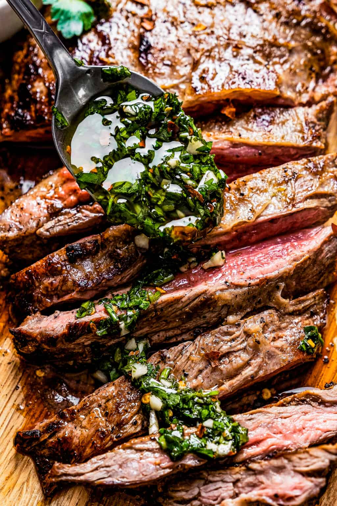

Home
Churrasco

A Churrasco Recipe sourced from Diethood.
Ingredients
Equipment
- Cast iron Skillet
- Instant Read Meat Thermometer
The Chimichurri
- 1 cup finely chopped fresh parsley
- 3 cloves garlic, finely chopped
- 1½ tablespoons red wine vinegar
- ½ tablespoon lime juice
- ½ teaspoon lime zest
- ½ cup olive oil
- ½ teaspoon red pepper flakes, or to taste
- salt, to taste
The Marinade
- 1 cup freshly squeezed orange juice
- 3 tablespoons olive oil
- ¼ cup water
- ¼ to ½ small serrano chile
- 10 cloves garlic, divided
- 1 teaspoon salt
The Steak
- 1 pound skirt steak, 1/2″ thick
- salt and fresh ground black pepper, to taste
- 3 tablespoons vegetable oil
- ½ cup beef broth
Steps
The Chimichurri
- In a medium-sized bowl, combine the parsley, garlic, red wine vinegar, lime juice, lime zest, olive oil, red pepper flakes, and salt until well combined. Set it aside until ready to use.
The Marinade
- Add the orange juice, olive oil, water, serrano chile, and 3 garlic cloves to the blender. Process until you get a smooth mixture. Add the salt. Process again to combine. Pour the marinade into a large container or a large resealable Ziploc bag.
The Steak
- Finely chop the remaining 7 garlic cloves and add them to the marinade. Place the skirt steak in the marinade and refrigerate it for 1 hour.
- Remove the meat from the marinade and pat it dry with a paper towel. Season it with salt and pepper to taste on all sides.
- Place a cast iron skillet or a large pan over high heat. Let it heat for 2 to 3 minutes. Add the vegetable oil and let it heat up for another minute. Add the seasoned steak and sear it for 3 to 4 minutes; flip it over and let it cook for 2 to 4 minutes on the other side for a medium-rare steak, or to an internal temperature of 130˚F to 135˚F.
- Cook it for another minute or so if you like your steak a little more cooked. Use a Meat Thermometer to check for doneness.
- Remove the steak from the skillet and set it on a cutting board. Let it rest for 5 to 10 minutes.
- In the meantime, make the jus. Return the skillet to the burner and reduce the heat to medium. Pour the beef broth into the skillet and, using a wooden spatula, gently scrape the bottom of the skillet to remove any browned bits from when the steak was cooking. Season with salt to taste, and let it reduce for 2 to 3 minutes. Remove the skillet from the heat and set aside.
- Using a sharp knife, carefully cut the steak against the grain into 1" slices. Set them on a serving plate and pour the jus on top.
- Serve with chimichurri on the side, and enjoy.
Notes
- Steak options: Churrasco steak is generally made with skirt steak, about 1/2-inch in thickness. But flank steak is a good alternative.
- Orange juice: If you can, use freshly squeezed orange juice, but you can also use store-bought orange juice.
- Chile options: You can use a jalapeno instead. In both cases, I recommend seeding the pepper.
- Jus: This is a fancy word for a simple sauce made from the caramelization of animal proteins on a hot pan.
- Don’t crowd the pan: If you crowd the pan, not only will the steak not brown properly, but it will release all of its moisture, leaving you with a tough, dry finished product. If you want to double the recipe, don’t cook two steaks in the same skillet simultaneously.
- Let it rest: After cooking, let the steak rest for at least 5 minutes. This will allow the juices to settle in the meat, producing a more flavorful, juicy steak. Cutting against the grain makes steak more tender and easier to chew.
- Grilled Churrasco: To grill the steaks, place them on a preheated grill and cook for 2 to 3 minutes per side. Two minutes will yield medium-rare steaks, while three minutes will get you closer to medium-well. Remove them from the heat and let them rest for 5 to 10 minutes before cutting.
- Steak doneness. The ideal internal temperature for grilled skirt steak is 130°F for rare, 135°F medium-rare, 145°F medium, 150°F medium well, and 160°F for well done. Keep in mind that meat will continue to rise a few degrees once it’s off the grill.